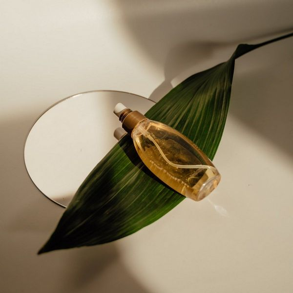

烘焙:杯子蛋糕、巧克力塔、曲奇餅乾、乳酪蛋糕
中餐:蔥花煎蛋、蔥油餅、青椒炒肉絲、三杯雞、玉米濃湯、乾煎鱸魚、蒸蛋、油飯、涼拌黃瓜條
以上是我在這段期間以前做過的料理，做了這麼多，我了解到團隊合作的重要，食材的比例也很重要，不能多加或少放，希望藉由這些經驗，日後能在做菜上更精進
菲律賓:
這是我曾經去過的地方，這裡讓我感覺到跟台灣不一樣的海島風情，除了欣賞海景外，也體驗了當地的生活與文化，那裡有非常多的美食，其中椰子最為經典，當時嘗了很多椰子料理，都非常有特色，鹹甜都有，到了晚上還有人會在海灘上表演，長灘島的旅遊經驗也更加讓我想探索更多地方。

Drag & Drop Website Builder